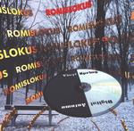

| Artist: | Romislokus |
| Title: | Vinyl Spring, Digital Autumn |
| Label: | Sverchok Records no catnr |
| Length(s): | 52 minutes |
| Year(s) of release: | 2002 |
| Month of review: | [04/2002] |
| 1) | The Snow Of The Rails | 4.51 |
| 2) | The Face Of A City | 5.58 |
| 3) | 78 | 6.49 |
| 4) | Absolute Control | 5.06 |
| 5) | It Is Winter | 3.56 |
| 6) | Miss The Target | 6.29 |
| 7) | A Tree By The Wall | 6.49 |
| 8) | Tuner | 3.09 |
| 9) | Substance | 4.24 |
| 10) | Smoke | 4.11 |
The Face Of A City starts with dominant vocals, making it sound flat, to find this flatness diminished by the instrumental part, which seemingly features Hank Marvin on guitar and a lady on ha-ho feeling very dramatic.
78 has a long intro, featuring cello. Nice atmosphere, spoiled by the oncoming vocals.
Despite the somewhat flat drumming, sounding almost boxed, and not too exiting main guitar line, Absolute Control also features interesting endeavours as well as a nice build up.
It Is Winter is a slow song featuring slow guitar and a cello. The guitar sound remains somewhat onesided, negating the atmospheric effect created by the cello. The bells and violin introduce a James Last Christmas.
Miss The Target starts with lonely keys, sounding as though in a wintery forest, reminiscent of Drowning, Not Waving. As in the previous track the cello puts down a good atmosphere, to find its influence nullified by the vocals. I found the end of this track rather abrupt.
A Tree By The Wall starts mainly cello with vocals, the same contrast as before. The lengthy instrumental section following this once again shows a nice depth of use of instruments and melodic almost experiments.
Tuner is a bit of a surprise, since it sounds very much like modern psychedelic, with a dancy beat and fuzzy guitars. Not exactly an asset for this kind of album.
Substance starts largely vocal with guitar, not all thrilling, but the oncoming of the violin and female vocals add a melancholic mystery making the track quite worthwhile.
Smoke finishes the album representatively, with the strummy guitaring and vocals, with the bells taking a clear role for themselves, this time though, not used too remind one of Christmas. And followed by an instrumental part which gives the track its depth.
You can find Romislokus at www.romislokus.com